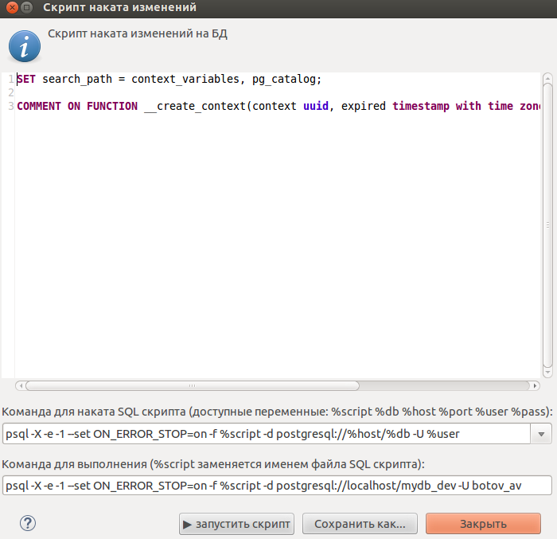
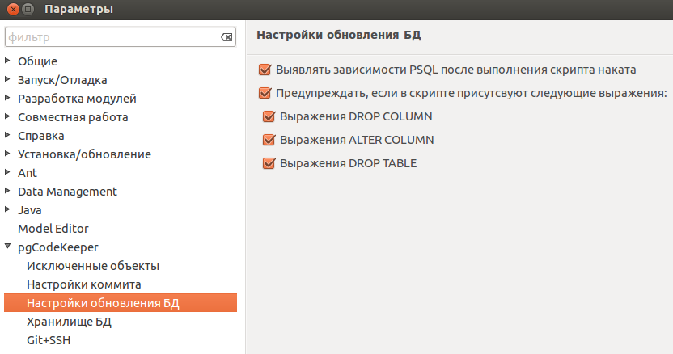

области редактирования скрипта

области указания команды для выполнения скрипта

кнопок для манипуляции со скриптом, и закрытия окна

В этом окне представлен скрипт наката, позволяющий привести состояние объекта из одной БД в состояние в другой.

Окно состоит из:
области редактирования скрипта
области указания команды для выполнения скрипта
кнопок для манипуляции со скриптом, и закрытия окна
В настройках плагина можно выставить галочку, которая при выполении скрипта через psql, будет считывать вывод и пытаться определить зависимые объекты, которые препятствуют нормальному завершения скрипта.
